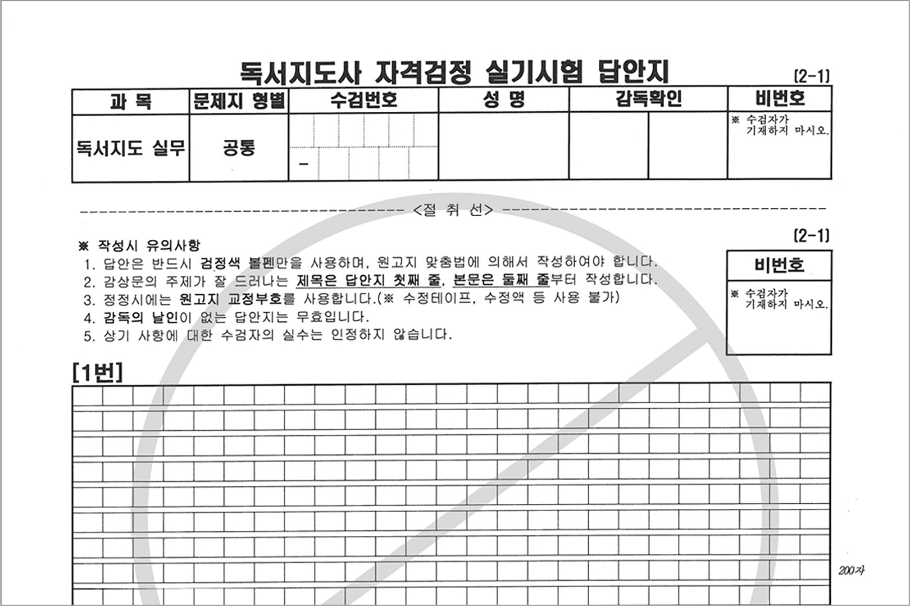
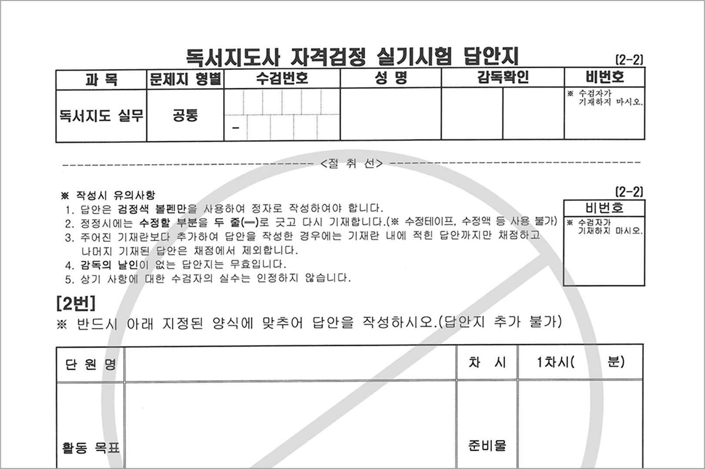

독서지도사 자격시험 견본문제
독서지도사 자격시험 견본문제 다운로드- 시험문제의 유형을 참고하시도록 견본문제를 제공합니다.
- 실제 시험에는 같은 문제가 출제되지 않습니다.
- 독서지도사 자격시험은 문제은행 방식으로 운영되어 기출문제를 제공하지 않습니다.
실기시험 답안지 견본
서평식 독서감상문
독서지도계획안
- 견본 답안의 재배포를 금합니다.
- 온라인 시험일 경우 웹에서 작성 가능한 양식으로 제공합니다.
- 이미지를 클릭하시면 PDF 파일로 보실 수 있습니다.